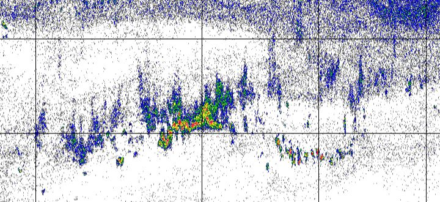

Backscatter Identification
Acoustic Characteristics of CPS
While the acoustic properties of swimbladder fish depends on several factors, the most important are the acoustic wavelength, swimbladder size, and swimbladder orientation to the incident sound pulse. We use 39, 70, 120, and 200kHz to capture a range of swimbladder sizes and orientations. During our nightly trawl catches, we measure the standard length for a collection of fish. Using the standard length we estimate the dorsal surface area of a swimbladder (swimbladder size). Knowing the approximate dorsal surface area of a swimbladder allows us to calculate the backscattering cross-section of one bladder and in turn the volume backscattering coefficient (many swim bladders together such as a school of fish). We are able to calculate backscattering coefficients for each CPS species. You may also hear the word Target Strength, which is a logrithmic function of the backscattering cross-section and describes how sound reflects off the swim bladder depending on its size. For this survey we calculate target strength as a logarithmic function of frequency and species-specific parameters obtained theoretically or experimentally and fish total length from trawl samples. Full details on species-specific target strength parameters can be found in the survey biomass report here.
Sv differences in the CPS range:
−13.85 < Sv 70kHz − Sv 38kHz < 9.89
− 13.5 < Sv 120kHz −Sv 38kHz < 9.37
− 13.51 < Sv 200kHz − Sv 38kHz < 12.53
The automated CPS processing in ‘Echoview’ filters for all CPS meeting the criteria above, however some non-CPS targets still pass through the filter, specifically fishes like rockfish. To remove these CPS-like targets, we manually review each exported Echoview echogram.
Below is how we do that.
Using the ‘extract_CPS_NASC.R’, an R-based tool in the ‘estimATM’ package, we remove non-CPS targets from final echograms. This process aims to distinguish CPS from non-target species from mid-water, demersal, and benthic swim bladder fishes.
We follow a decision guide to help distinguish CPS and retain the backscatter that meets the criteria in green.
Below is an example of a well defined school with high Sv. CPS schools can occur in near the surface, mid-water column, or compressed to the seabed (especially in shallow waters during the day).
Below are examples of non-CPS that we manually using ‘extract_CPS_NASC.R’.

When looking at Echoview echograms of acoustic transects, if there are areas where we are unsure if the backscatter is CPS or not CPS based on visual inspection, we dig deeper and examine how the volume backscattering coefficient (Sv) changes over each frequency. We refer to this as the frequency response. Swimbladder fish are expected to have a flat or decreasing frequency response across 38kHz, 70kHz, 120kHz, and 200kHz (Figure 1) with the decrease or flattening occurring between 120kHz and 200kHz.
Reference: Content is adapted from this google document: Name that Backscatter!